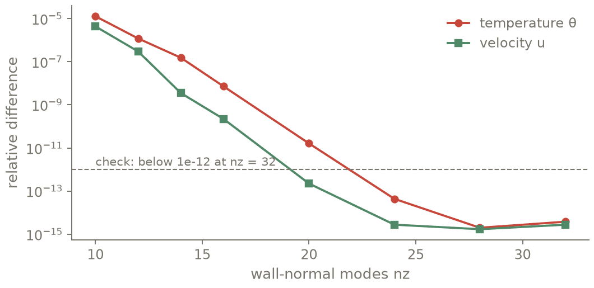

Importing a Dedalus script¶
Write a convection cell as a Conatus model, import the same cell from a Dedalus 3 script, and check that the two agree.
Goal. The onset of two-dimensional Boussinesq convection between a hot and a cold wall:
write it as a native Conatus model: equations as on paper, conditions by wall name, no tau terms;
give a Dedalus 3 script of the same cell to
cn.from_dedalusand read its line-by-line report;run the translation and compare it with the native model as the wall-normal resolution grows;
optionally, run the original script and compare its result with the translation.
Expected. The report has no unsupported line. The native model and the translation are two
tau formulations of the same equations, so they differ by a truncation error that decays
spectrally with \(N_z\), down to rounding at \(N_z = 32\). When the original script can be run, the
check script finds the translation equal to its result to rounding (\(< 10^{-10}\) relative after
40 steps of SBDF2).
Time: about 5 s of CPU; the optional check takes under a minute, most of it at import.
Scripts: t14_from_dedalus.py (no Dedalus needed),
rb_cell_dedalus.py (the Dedalus script, written for this tutorial),
t14b_dedalus_check.py (runs the original script and compares).
Tests behind it: tests/translate/, tests/parse/.
Guide: Importing Dedalus scripts, Equations.
The cell as a native model¶
The driver is t14_from_dedalus.py. To run the blocks of this page
yourself, save rb_cell_dedalus.py in your working directory first:
the translation reads it. The driver starts with its imports:
import os
import numpy as np
import conatus as cn
# Onset of convection in diffusive units: th is the temperature minus the conduction profile 1 - z,
# so it vanishes on both walls; u.ez carries the conduction profile into the heat equation.
RA, PR, PERIOD, NX, DT = 3000.0, 7.0, 2.0, 24, 5e-4
def start(x, z):
"""One roll of the temperature deviation."""
return 1e-3 * np.cos(2 * np.pi * x / PERIOD) * np.sin(np.pi * z)
def native(nz):
"""The cell as a Conatus model: unknowns by role, equations as written on paper, conditions by
wall name. No tau field and no lift: the native layer places one tau per condition."""
m = cn.Model(cn.Box(x=cn.periodic(PERIOD), z=cn.walls(0, 1)), name="convection onset",
Ra=RA, Pr=PR)
m.velocity("u"), m.pressure("p"), m.scalar("th")
m.equations("""
momentum: dt(u) - Pr*lap(u) + grad(p) - Ra*Pr*th*ez = -u·grad(u)
mass: div(u) = 0
heat: dt(th) - lap(th) - u·ez = -u·grad(th)
""")
m.at("bottom", u=0, th=0)
m.at("top", u=0, th=0)
sim = m.simulate(N=(NX, nz), scheme="SBDF2", dt=DT)
sim.initial(th=start)
return sim.run(steps=40)
cell = native(16)
print(f"native model: t = {cell.t:.3f}, max|u| = {np.abs(cell.grid('u')).max():.3e}")
You name the unknowns by their role and write the equations as on paper. lap, div and grad
are the operators of the box’s coordinates. The unknown th is the temperature minus the
conduction profile \(1 - z\), so it vanishes on both walls, and u·ez is the advection of that
profile. Lengths are in units of the depth and times in units of the thermal diffusion time. The
walls are bottom and top. The native layer adds one tau term per wall condition by a fixed
rule, and explain() prints them.
The same cell as a Dedalus script¶
rb_cell_dedalus.py is a Dedalus 3 script written for this tutorial.
It is a separate file: the driver reads it but does not run it, so do not paste it into the
driver. It reduces the equations to first order and declares its own tau fields and lifts:
plane = d3.CartesianCoordinates('x', 'z')
mesh = d3.Distributor(plane, dtype=np.float64)
horiz = d3.RealFourier(plane['x'], size=N_x, bounds=(0, period), dealias=1.5)
vert = d3.ChebyshevT(plane['z'], size=N_z, bounds=(0, 1), dealias=1.5)
u = mesh.VectorField(plane, name='u', bases=(horiz, vert))
p = mesh.Field(name='p', bases=(horiz, vert))
th = mesh.Field(name='th', bases=(horiz, vert))
u_bot = mesh.VectorField(plane, name='u_bot', bases=horiz) # tau terms, one per wall condition
u_top = mesh.VectorField(plane, name='u_top', bases=horiz)
th_bot = mesh.Field(name='th_bot', bases=horiz)
th_top = mesh.Field(name='th_top', bases=horiz)
gauge = mesh.Field(name='gauge') # constant tau of the pressure
# Tau terms live in the first-derivative basis of z; the bottom ones enter through the gradients
e_x, e_z = plane.unit_vector_fields(mesh)
dz_basis = vert.derivative_basis(1)
tau_z = lambda f: d3.Lift(f, dz_basis, -1) # noqa: E731 (a Dedalus idiom)
Gu = d3.grad(u) + e_z*tau_z(u_bot)
Gth = d3.grad(th) + e_z*tau_z(th_bot)
onset = d3.IVP([u, p, th, u_bot, u_top, th_bot, th_top, gauge], namespace=locals())
onset.add_equation("dt(u) - Pr*div(Gu) + grad(p) - Ra*Pr*th*e_z + tau_z(u_top) = -u@grad(u)")
onset.add_equation("trace(Gu) + gauge = 0")
onset.add_equation("dt(th) - div(Gth) - u@e_z + tau_z(th_top) = -u@grad(th)")
onset.add_equation("u(z=0) = 0")
onset.add_equation("th(z=0) = 0")
onset.add_equation("u(z=1) = 0")
onset.add_equation("th(z=1) = 0")
onset.add_equation("integ(p) = 0")
# Fixed-step SBDF2 run from one roll of the deviation
run = onset.build_solver(d3.SBDF2)
run.stop_iteration = steps
x, z = mesh.local_grids(horiz, vert)
th['g'] = 1e-3*np.cos(2*np.pi*x/period)*np.sin(np.pi*z)
while run.proceed:
run.step(tstep)
It uses a fixed time step and a deterministic start. The translator marks a CFL or a
fill_random line unsupported and says what to write instead: Conatus runs with a fixed
dt, and the random layout of fill_random cannot be reproduced.
Translate and read the report¶
SCRIPT = "rb_cell_dedalus.py" # the Dedalus script, in the working directory
tr = cn.from_dedalus(SCRIPT) # read with `ast`, never executed; Dedalus is not imported
print(tr.explain())
counts = tr.counts()
The translator parses the script with ast and reads it statement by statement with a restricted
interpreter. It does not execute the script or import Dedalus. In the output below, look for:
e_z*tau_z(u_bot): a product of two vectors, which the source language reads as a tensor product. The report saysouter.trace(Gu): it becomesdiv(u)plus the tau term, anddiv(outer(ez, ...))becomesdz(...). Both are exact identities, and both are listed.dealias=1.5, written in the script. When a script leavesdealiasout, the translator writes the source default of 1 explicitly and reports it.The
whileloop: it becomessolver.run(n)with the script’s fixeddt.
Run the translation¶
solver = tr.ivp_solver(startup="lower_order") # the script's SBDF2, dt and initial th
solver.run(tr.steps()) # 40 steps, no Python time loop
print(f"translation: t = {solver.t:.3f} after {tr.steps()} steps, "
f"max|u| = {np.abs(solver.grid('u')).max():.3e}")
tr.ivp_solver takes the script’s scheme and dt, and replays its th['g'] = ... line on the
Conatus grid. SBDF2 is a two-step scheme. startup="lower_order" starts it with one first-order
step, as the source script does.
Native model and translation, side by side¶
def translated(nz):
"""The same script at another wall-normal resolution (a declared, reported override)."""
t = cn.from_dedalus(SCRIPT, overrides={"N_z": nz})
s = t.ivp_solver(startup="lower_order")
s.run(t.steps())
return s
def rel(a, b, name):
return np.abs(a.grid(name) - b.grid(name)).max() / np.abs(b.grid(name)).max()
gap = {}
for nz in (12, 16, 32):
a, d = (cell, solver) if nz == 16 else (native(nz), translated(nz))
gap[nz] = (rel(a, d, "th"), rel(a, d, "u"))
print(f"nz = {nz:2d}: native vs translated, relative difference th {gap[nz][0]:.1e}, "
f"u {gap[nz][1]:.1e}")
The translation keeps the script’s tau terms, and the native model places its own. These are two
discretisations of the same equations, so they agree up to the truncation error. The difference
falls spectrally as \(N_z\) grows and reaches rounding at \(N_z = 32\). Both converge to the same
solution, and the difference measures how far the coarser grids are from it.
overrides={"N_z": nz} changes one top-level assignment of the script, and the report lists the
change.


Relative difference between the native model and the translated script after 40 SBDF2 steps, against nz. The two tau formulations of the same equations differ by an amount that falls spectrally down to rounding.¶
Check¶
P = tr.numbers()
assert counts["unsupported"] == 0 and tr.scheme == "SBDF2" and tr.steps() == 40
assert P["Ra"] == RA and P["Pr"] == PR and P["tstep"] == DT # same physics, same step
assert max(gap[32]) < 1e-12 and max(gap[32]) < 1e-3 * max(gap[12]) # spectral convergence
print("PASS")
Output (as executed)¶
# t14_from_dedalus: PASS (exit 0) in 2.4 s | 2026-10-23 | script sha256 5a740420eb488748
native model: t = 0.020, max|u| = 4.225e-02
Dedalus -> Conatus: rb_cell_dedalus.py
39 translated, 0 approximated, 0 unsupported, 0 skipped (output only)
problem: IVP with 8 equations, variables u, p, th, u_bot, u_top, th_bot, th_top, gauge
time stepping: SBDF2, dt = 0.0005, stop_sim_time = None; ivp_solver() imposes time-dependent boundary data as Dedalus does (bc_time='step'; bc_time='auto' for the Conatus default, which keeps the order of the scheme)
data: th (translated)
Line-by-line report:
20 translated import numpy as np
21 translated import dedalus.public as d3
24 translated Ra = 3000.0
25 translated Pr = 7.0
26 translated period = 2.0
27 translated N_x, N_z = 24, 16
28 translated tstep = 5e-4
29 translated steps = 40
32 translated plane = d3.CartesianCoordinates('x', 'z')
33 translated mesh = d3.Distributor(plane, dtype=np.float64)
34 translated horiz = d3.RealFourier(plane['x'], size=N_x, bounds=(0, period), de...
35 translated vert = d3.ChebyshevT(plane['z'], size=N_z, bounds=(0, 1), dealias=1.5)
36 translated u = mesh.VectorField(plane, name='u', bases=(horiz, vert))
37 translated p = mesh.Field(name='p', bases=(horiz, vert))
38 translated th = mesh.Field(name='th', bases=(horiz, vert))
39 translated u_bot = mesh.VectorField(plane, name='u_bot', bases=horiz)
40 translated u_top = mesh.VectorField(plane, name='u_top', bases=horiz)
41 translated th_bot = mesh.Field(name='th_bot', bases=horiz)
42 translated th_top = mesh.Field(name='th_top', bases=horiz)
43 translated gauge = mesh.Field(name='gauge')
46 translated e_x, e_z = plane.unit_vector_fields(mesh)
47 translated dz_basis = vert.derivative_basis(1)
48 translated tau_z = lambda f: d3.Lift(f, dz_basis, -1)
49 translated Gu = d3.grad(u) + e_z*tau_z(u_bot)
-> 'ez*lift(u_bot, z, -1, lam=1)' of two tensors -> outer (Dedalus convention)
50 translated Gth = d3.grad(th) + e_z*tau_z(th_bot)
52 translated onset = d3.IVP([u, p, th, u_bot, u_top, th_bot, th_top, gauge], nam...
53 translated onset.add_equation("dt(u) - Pr*div(Gu) + grad(p) - Ra*Pr*th*e_z + t...
-> div(outer(ez, lift(u_bot, z, -1, lam=1))) -> dz(lift(u_bot, z, -1, lam=1)) (exact identity, constant unit vector)
54 translated onset.add_equation("trace(Gu) + gauge = 0")
-> trace(outer(ez, lift(u_bot, z, -1, lam=1))) -> dot(...) (exact identity); trace(grad(u)) -> div(u) (exact identity); namespace functions used: trace
55 translated onset.add_equation("dt(th) - div(Gth) - u@e_z + tau_z(th_top) = -u@...
56 translated onset.add_equation("u(z=0) = 0")
57 translated onset.add_equation("th(z=0) = 0")
58 translated onset.add_equation("u(z=1) = 0")
59 translated onset.add_equation("th(z=1) = 0")
60 translated onset.add_equation("integ(p) = 0")
63 translated run = onset.build_solver(d3.SBDF2)
-> solver: IVPSolver(plan, 'SBDF2', dt) (dt from the time loop)
64 translated run.stop_iteration = steps
-> number of steps: solver.run(n)
65 translated x, z = mesh.local_grids(horiz, vert)
-> grid coordinates: used for initial / given data only
66 translated th['g'] = 1e-3*np.cos(2*np.pi*x/period)*np.sin(np.pi*z)
-> grid data of th: initial condition / given field (tr.data)
67 translated while run.proceed:
-> time loop -> solver.run(n) with a fixed dt = 0.0005 (no Python loop); the loop body (logging, analysis) is not translated
translation: t = 0.020 after 40 steps, max|u| = 4.225e-02
nz = 12: native vs translated, relative difference th 1.2e-06, u 3.0e-07
nz = 16: native vs translated, relative difference th 7.2e-09, u 2.2e-10
nz = 32: native vs translated, relative difference th 3.8e-15, u 2.8e-15
PASS
Optional: run the original script¶
t14b_dedalus_check.py runs the original script, if Dedalus is
installed (micromamba install -c conda-forge dedalus), and compares its result with the
translation:
os.environ.setdefault("OMP_NUM_THREADS", "1") # Dedalus asks for it before its import
try:
import dedalus # noqa: F401 (comparison oracle only; the conatus package never imports it)
have_dedalus = True
except ImportError:
have_dedalus = False
print("Dedalus is not installed here: the comparison with Dedalus is skipped (declared)")
if have_dedalus:
logging.disable(logging.INFO) # Dedalus's per-step log lines
ns = runpy.run_path(SCRIPT, run_name="__main__") # the script, run by Dedalus as written
out = {}
for name in ("th", "u"):
ns[name].change_scales(1) # back to the grid without 3/2 padding
out[name] = np.array(ns[name]["g"])
rel_th = np.abs(out["th"] - th_cn).max() / np.abs(out["th"]).max()
rel_u = np.abs(out["u"] - u_cn).max() / np.abs(out["u"]).max()
print(f"Dedalus: t = {ns['run'].sim_time:.3f}; relative difference th {rel_th:.1e}, "
f"u {rel_u:.1e}")
The translation keeps the script’s bases, tau terms, lifts, scheme, start-up and dealiasing, so the difference is rounding.
Its output:
# t14b_dedalus_check: PASS (exit 0) in 13.3 s | 2026-10-21 | script sha256 763cece2d005a63e
Conatus: t = 0.020 after 40 steps
2026-10-21 19:47:52,019 dedalus 0/1 WARNING :: Threading has not been disabled. This may massively degrade Dedalus performance.
2026-10-21 19:47:52,020 dedalus 0/1 WARNING :: We strongly suggest setting the "OMP_NUM_THREADS" environment variable to "1".
Dedalus: t = 0.020; relative difference th 3.0e-14, u 3.8e-15
PASS
Going further¶
print(tr.to_script())writes a runnable Conatus program (it replays the translation and runs it), with the report as comments.For a problem built inside a function, use
cn.from_dedalus(script, entry=("f", {...})).Importing Dedalus scripts lists the translated subset and the translator’s tests on the official examples. The relative differences between translated and original results are 1.3e-15 for KdV–Burgers, 7e-16 for Poisson, 1.3e-15 for the shear flow, 4e-16 for the Rayleigh–Bénard eigenvalue problem and 5e-14 for the pipe-flow eigenvalues on the disk.